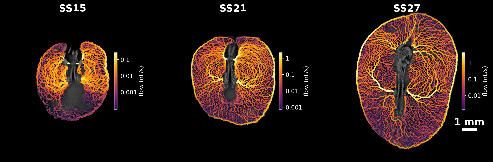
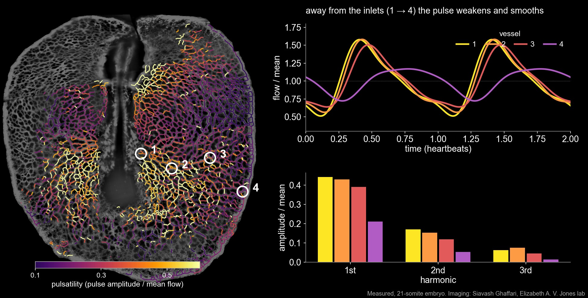

Vascular Flows in the Yolk Sac
The heart begins beating while the yolk sac's vascular network is still a dense, immature plexus. How does blood move through this network, and how does each heartbeat travel through it? We reconstruct both, across the whole yolk sac, in three different avian embryos at successive stages of development. Each is staged by its number of somites, the paired blocks of tissue that form one after another along the embryo's body axis, so the count serves as a developmental clock (a new pair forms roughly every 90 minutes).
Imaging and measuring flow
Imaging such an organ is a challenge in itself: high-speed microscopy (250 frames per second) can only record it one field of view at a time, while the network continues to develop. We stitch these recordings into whole-organ networks of thousands of vessels.
In each vessel, the motion of red blood cells gives the velocity profile across the vessel, and from it the volumetric flow rate through every heartbeat: both its mean and its pulsatile part.
An organ-scale flow field
Combining the recordings gives a picture of blood flow across the entire yolk sac: where blood enters from the dorsal aorta, how it spreads through the plexus, and where it drains back into the veins. The video shows the one region where both meet: blood arrives through the two branches of the dorsal aorta and returns through the veins alongside, pulsing in step with the same heartbeat.

Driving a simple model of passive flow through the measured vessel diameters reproduces much of this field, suggesting that the network's geometry largely sets where the blood goes. Across the three embryos a hierarchy emerges: at 15 somites flow spreads through a fairly uniform mesh, while by 27 somites a few large arteries and the encircling marginal vein carry most of it.
What the pulse reveals

Each heartbeat sends a pulse through the plexus. Close to where blood enters, flow surges sharply with every beat; towards the edge of the yolk sac the pulse is weaker and smoother. Its sharpest features, the higher harmonics, fade first: the network acts as a low-pass filter.
That filtering comes from the elasticity of the vessel walls, which briefly stretch to store blood during each beat. A model of the network as elastic, compliant vessels, fitted to how the pulse is delayed and damped from vessel to vessel, gives an estimate of how stiff these young vessel walls are. It also shows the limits of inferring an organ's physics from measurements made one region at a time.